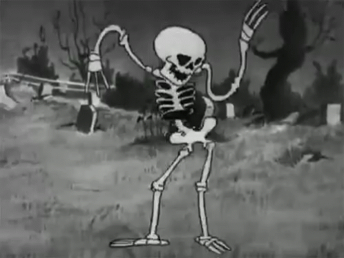

...so it’s better 💀quality.
...so it’s better 💀quality.Step into a world of sound and soul. At Kore’s Vinyl Shop, we offer a wide range of vinyl records—from timeless classics to modern hits, both used and unused.
Looking to part with an old favorite? We buy and trade vinyl, making it easy to refresh your collection. With a vast selection across genres, there’s something here for every listener.
Born from a time when the Underworld fell silent, Kore founded this shop to bring music back to our restless souls. Her passion for vinyl transformed into a sanctuary of sound, aiming to soothe, uplift, and celebrate the departed with every record spun.
Kore’s Vinyl Shop, Because even in the Underworld, music never dies.
To hear the sound of the siren, Elysian and irresistible, is to the ear what ambrosia is to the tongue. Before the advent of the written pictograph, our voices carried feeling and meaning to all who heard, spreading the unseen stories by way of song. Then came the struck rock, the stick upon stone, pelt dried and stretched taught, and instrumentation wheeled into the prehistoric zeitgeist of communication.
Through the ages, under the rise and fall of civilizations grand and unknown, music has grown and fluxed immeasurably to provide as little as background to one’s life and as much as the entire meaning for one’s existence. Song is the speaking of the heart, ideas weaving into choruses of musical accompaniment to give way to countless ideas and stories to those that heard.
A vinyl store is more than an outlet for purchasing music; it is the continuation of a tradition as old as humanity, a catalyst for recorded tales and emotions to find root in the hearts and minds of those who seek new perspectives or comfortable familiarity in community. All genres, all instrumentations, all vocalization categories; all these tell a story of culture, of creed, of backgrounds both similar and foreign to our own. Within the carved grooves of these vinyls are the continuations of history, told by a world’s worth of voices to enrich that which you yourself possess.
...and also vinyl doesn’t have digital sound compression,
...so it’s better 💀quality.